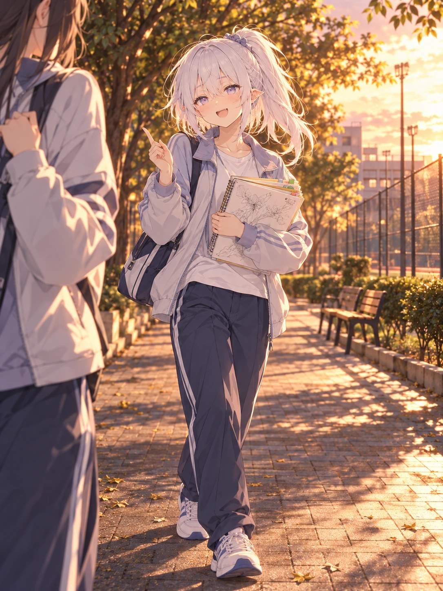

其他制作记录 / 逐页阅读
T23 · 学生时代的社团放学路
已检查 · 高马尾放学路可审阅

检查与反馈记录
- 高马尾、紫眼与碎刘海延续学生身份；开口笑和轻挑眉有打趣朋友的反应感。
- 主角一手抱本、一手比划，只有两手；两裤腿各接一只鞋，步伐受力自然，运动服符合社团活动后情境。
- 朋友在左边缘部分出现，不把其手臂或裤子计入主角；对话无亲密或成人化姿态。
- 实际手势由抱本变成食指比划，仍符合聊天情境；朋友为虚构陪衬，未设定姓名与现实身份。
其他制作记录 / 逐页阅读
已检查 · 高马尾放学路可审阅
